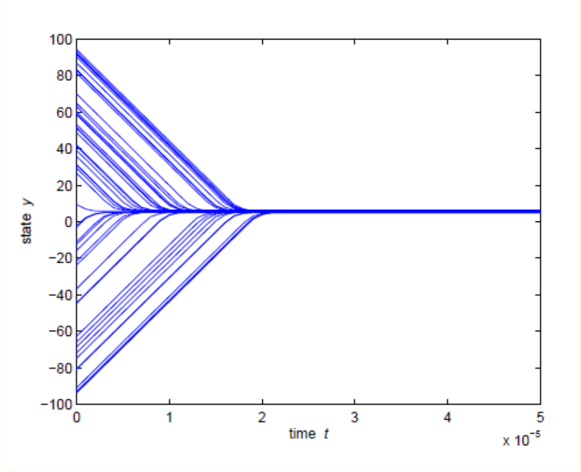
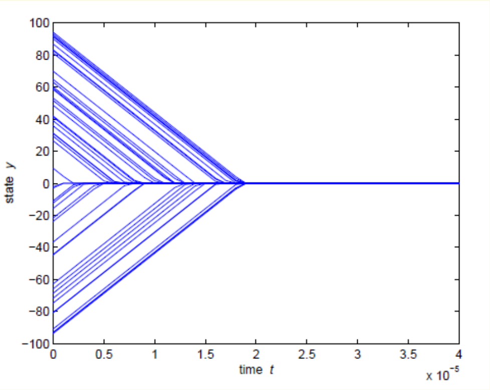
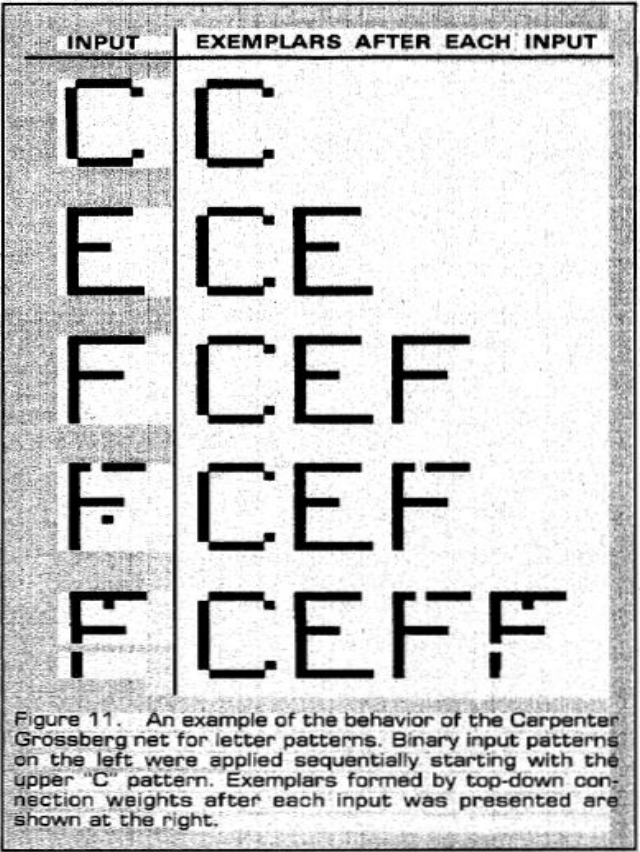
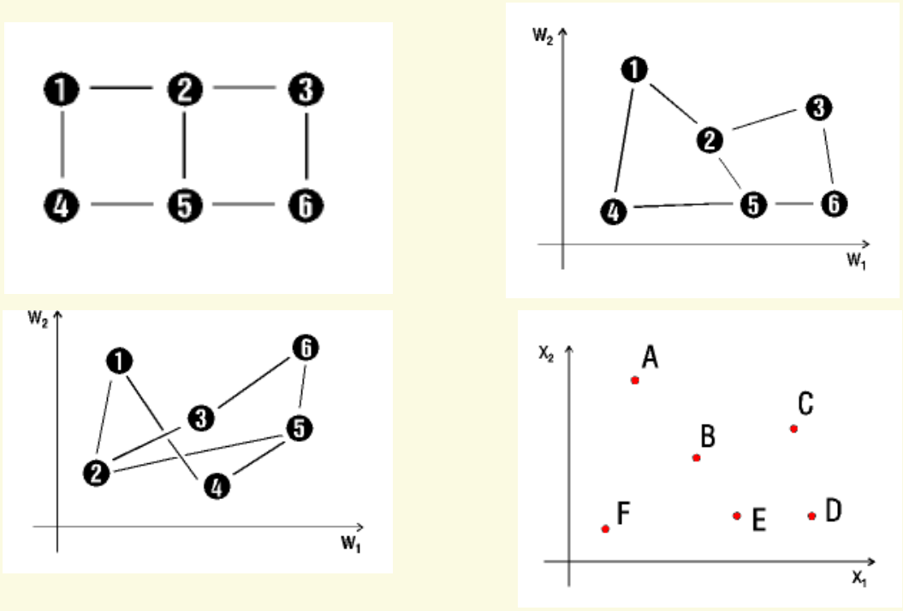
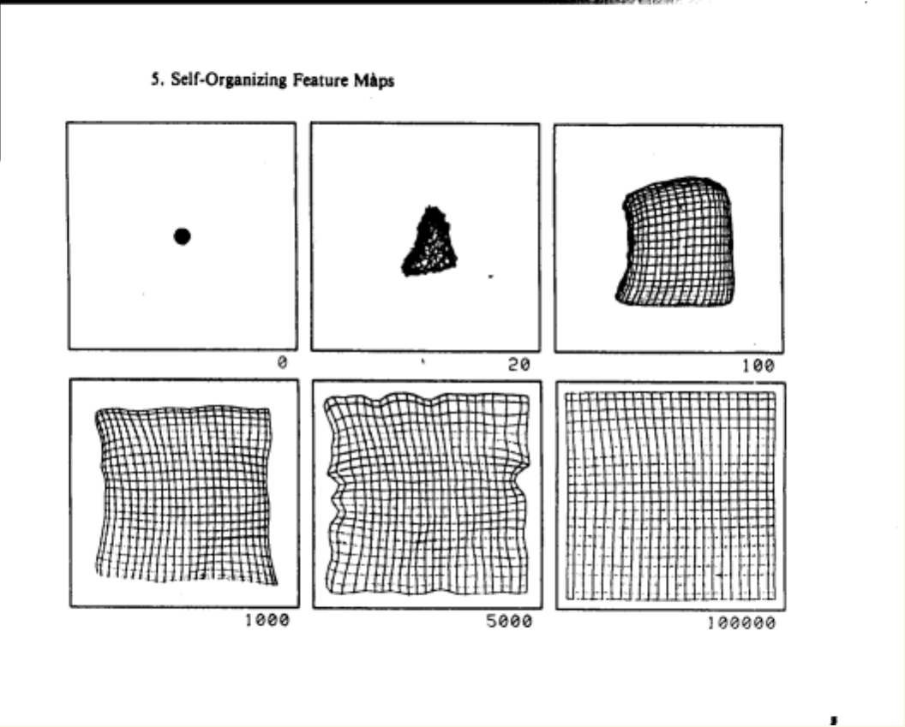
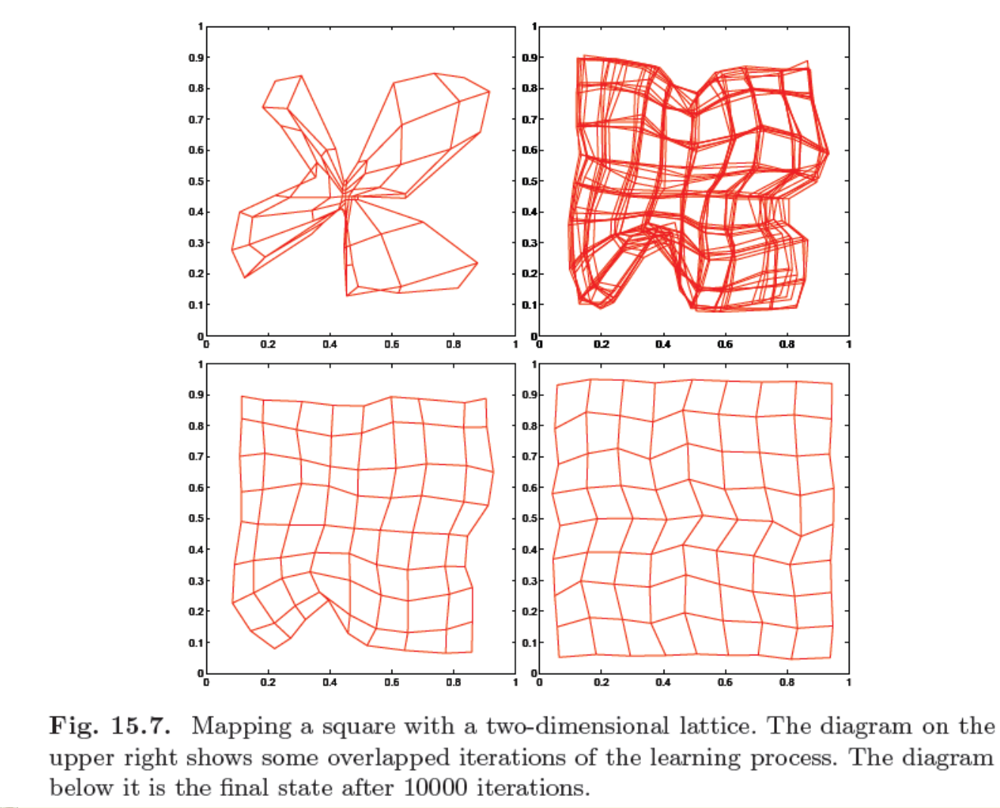

开始之前：本周要解决什么问题
假设一批图样不断送到系统里，没有人预先告诉系统它们属于哪一类。系统至少要做三件事：比较已有候选，判断新图样是否值得单独成类，以及把相似图样安排到容易理解的位置。本周沿着这条线学习：先用 MAXNET 与 k-Winners-Take-All（k 个获胜者竞争，kWTA）解决“谁胜出”，再用 Adaptive Resonance Theory 1（自适应共振理论第一类模型，ART1）解决“是否接纳或增加类别”，最后用 Self-Organizing Map（自组织映射，SOM）学习“如何把固定数量的原型排成有意义的地图”。
- 解释正自连接和负侧向连接的不同作用，并手算 MAXNET 的同步竞争。
- 读懂 kWTA 的标量阈值状态，判断阈值移动方向，说明有限时间结论的条件。
- 从零初始化 ART1，依次完成评分、警戒检验、重置搜索和权重更新。
- 区分 SOM 的输入空间与地图空间，算出获胜单元和邻域的一次更新。
- 解释 ART1 增加类别与 SOM 组织固定地图的区别，并识别噪声、输入顺序和参数带来的限制。
本教材可以独立开始阅读，只需要加减乘除和坐标的基本直觉。不要求先学 Hopfield。主资料严格限定为 Lecture_slides_full semester.pdf，实际第164–177页及第234–241页；这里的“页”均从 PDF 第一页开始数，不是页脚幻灯片编号。第178–233页与第242–244页均不纳入本周。
阅读约定：正文中的“原资料”指上述课件及限定范围的 Lippmann 阅读材料；“教学补充”指为理解而补入的推导、说明或自设例题；“经核实的纠正”会单独注明。重要性只衡量本周学习依赖与方法作用：5/5 核心基础、4/5 重要方法、3/5 理解支撑、2/5 局部拓展、1/5 背景补充，不表示考试概率。
1 必要前置：从数据、相似性到会变化的状态
1.1 Unsupervised learning（无监督学习）与 Clustering（聚类）
在有监督分类中，一个训练样本通常同时带有输入和目标标签，例如“这幅图是 C”。在 Unsupervised learning（无监督学习）中，学习阶段只有图样本身，系统要根据它们的结构形成组织。没有标签不等于没有设计选择：仍要决定用哪些特征、如何衡量相似，以及怎样接受或拒绝合并。
Clustering（聚类）是依据选定的相似性，把相近的数据放进同一组。课件第170页的“物以类聚”提出的是直觉；第171页补上关键限定：相似性需要定义，聚类通常没有唯一的天然答案。按颜色分、按形状分、按大小分，可能都能得到有意义但不同的组。因此“没有唯一答案”不是允许随意分组，而是要求先说明分组依据。
第171页左图有三团稠密点，容易让人想到三个簇；右图除了三团点，还有右下方较分散的一组。这提醒我们：到底把稀疏点当作一类、噪声，还是归入最近的已有类，需要规则决定。第235页红、绿、蓝三团点同样用于建立“数据有群组结构”的直觉；颜色是图中的说明标记，不能反过来假定无监督算法训练时已得到这些标签。
四个二维样本是 (0,0)、(0,1)、(5,0)、(5,1)。若两个特征同等重要，左右两组相距很远，把左边两个放一类、右边两个放一类很自然。若任务专门关注第二个特征是否为 0，那么上、下分组也有意义。算法输出是否有用，依赖特征和任务，不能只凭“簇的数目看起来对”判断。
原资料：Lecture_slides_full semester.pdf，实际第170–171、235页。四点例子及任务解释为前置教学补充。
1.2 Prototype vector（原型向量）与 Vector quantization（向量量化）
把一个样本写成 Feature vector（特征向量），就是按固定顺序列出它的特征。若有 n 个特征，输入 是 n 维列向量；上标 T 表示转置，用来把横写的一排数理解成一列。二值图像也可以逐行展开：每个像素是一维，黑色为 1、白色为 0。此时 。
Prototype vector（原型向量）是代表某个单元或群组的一组特征。可以把它理解为“这个单元目前最熟悉的样本长什么样”。它不一定是某个真实样本，也不一定是算术平均。SOM 的原型是连续数值向量；本周 ART1 的模板则记录已接纳模式共同保留的 1 位。
Vector quantization（向量量化）用有限个原型代表大量甚至连续变化的输入。系统把一个输入交给最合适的原型，保存原型编号或用原型近似输入。例如一万个二维点只用十个代表向量来描述，表示更紧凑，但细节会损失。SOM 在这种有限代表之外，还要学习原型之间的空间组织。
“原型数”和“自然类别数”不能直接画等号。一个弯曲、复杂的群组可能需要多个 SOM 单元表示；ART1 的新增类别也可能只是对噪声过度敏感的结果。ART1 让已使用的类别数随输入增加；本周标准 SOM 预先固定地图单元数。这一差别将在最后比较。
原资料：Lecture_slides_full semester.pdf，实际第172、234–236页；course_files_export/ASSPM-Lippmann1987.pdf，实际第16–17页。向量记法及量化小例子为前置教学补充。
1.3 Distance（距离）与 Binary overlap（二值重叠）
对连续向量，最熟悉的相似性来自几何距离。对输入 和原型 ，二者都属于 ，SOM 课件使用的是 Squared Euclidean distance（平方欧氏距离）：
i 表示特征维度，j 表示地图单元； 是第 j 个原型的第 i 个坐标， 是一个非负标量。每一维先做差，再平方，最后相加：平方让正负偏差不会相互抵消。真正的欧氏距离是 ，但平方根在非负数上保持大小顺序，所以找最小者不必开根号。若坐标是有单位的同类量， 的单位是坐标单位的平方；若特征种类不同，应先选择合理尺度或做缩放，避免数值量级大的特征支配结果。
输入 (2,1)，两个原型 (0,1) 和 (3,3)。第一个平方距离为 (2−0)²+(1−1)²=4；第二个为 (2−3)²+(1−3)²=1+4=5。因此第一个获胜，尽管它在第一维差 2，而第二个只差 1：比较的是所有维度的总偏差。
对二值向量，另一个有用量是 Binary overlap（二值重叠）。两个 0/1 向量逐位相乘，只有两边都为 1 的位置留下 1。例如 1101 与 1011 的逐位乘积是 1001，共有两个 1。于是二者的点积就是共有 1 的个数：
这里 是二值模板，点积是标量计数。注意：这不统计共同为 0 的位置。Hamming distance（汉明距离）则数两向量不同的位数；它与“共有 1 的个数”不是同一个量。ART1 本周的匹配比例用后者，不用欧氏距离，也不是全体像素的一致率。
原资料：Lecture_slides_full semester.pdf，实际第174、237页；ASSPM-Lippmann1987.pdf，实际第5–6、8页。距离展开、符号与尺度说明为前置教学补充。
1.4 Discrete iteration（离散迭代）与 Differential equation（微分方程）直觉
State（状态）是系统此刻保存的量。MAXNET 的状态是各单元的活动值。离散迭代把“这一轮的全部旧值”变成“下一轮的全部新值”，t=0,1,2,… 是轮次。同步更新时，不能算完第一个新值后，立即拿它去算第二个新值；那会变成另一种更新顺序。
微分方程描述连续时间中的变化速度。 表示 y 每单位时间增加 2；若持续 0.3 个时间单位，y 就增加 0.6。 表示下降。kWTA 不需要先学复杂微积分：先根据右边判断“上升、下降还是停止”，再用距离除以速度理解一段变化花多久。
Equilibrium（平衡状态）表示状态不再变化；Convergence（收敛）表示演化趋向某个目标状态或目标集合。有限时间到达，意思是存在一个有限时刻之后已经达到目标；仅无限接近而永远不到达，是不同的说法。Stability（稳定性）关心小扰动是否会把系统带离目标附近，它也不等于“所有初值都到同一个数”。
MAXNET 可以用固定连接反复改变活动值，最终选出赢家，却不修改连接权重。ART1 和 SOM 则在完成选择后修改存储的模板或原型。状态变化不自动意味着发生了学习；要看变化的是活动还是长期参数。
前置教学补充，对应课件实际第164–169、174、237页所需的时间与状态概念。
2 MAXNET：让最大者在抑制中留下来
2.1 Winner-take-all（胜者全得）与 Lateral inhibition（侧向抑制）
如果三个候选的相似度分别是 0.8、0.5、0.3，能否让网络自己只留下最强的那个？
Winner-take-all（胜者全得，WTA）要保留最大输入对应的单元，压低其他单元。MAXNET 是实现这个操作的递归子网络。每个单元把自己的活动反馈给自己，同时向其他单元发送抑制。强者对别人造成的抑制大，别人对它造成的总抑制相对较小，差距因反复竞争逐渐扩大。
对 m 个输出单元，设从 j 到 i 的固定连接为 ，构成 。课件规定对角线是正的自连接，非对角线是负的侧向连接：
这里 w 是无量纲的抑制强度，m 是竞争单元数。 将旧活动原样带入本单元下一轮的加权和； 扣除其他单元贡献。“自激励”不是每轮都额外加 1，也不是在旁边再放一条负自连接。
原页将负权连接写为 “self inhibitory connections”。同页首条已说明是 laterally inhibitory，第二条说明自连接为 +1；Lippmann 实际第5页正文、第6页 Box 2 又明确给出对角线 +1、非对角线 −ε。因此这里应理解为侧向抑制连接。教材采用 0<w<1/m，补明正性以确保 −w 确实是抑制。
原资料及校正依据：Lecture_slides_full semester.pdf，实际第164–165页；ASSPM-Lippmann1987.pdf，实际第5–6页。连接图为教学示意图。
2.2 同步更新：一步步算到单一赢家
把初始非负评分存为活动 ，随后撤去外部评分输入，让网络自身迭代。采用 Lippmann 第6页 Box 2 的不饱和正半轴响应，写成：
是第 t 轮活动向量；求和遍历其他单元，不含 i；外面的 max 把负结果截为 0。t 是整数轮次，各项都使用同一轮旧值。此式假定活动不进入上端饱和区，且初始评分非负；存在正的、唯一最大评分时，它实现单一赢家选择。
已知 ，m=3，取 w=0.2。先检查 0.2<1/3，满足本例的抑制条件。我们要找的是赢家的位置，而不是重新计算原始评分。
第一轮分别扣除“其他两人的活动总和 × 0.2”：
第二轮第三个单元的未截断值为 0.04−0.2(0.64+0.28)=−0.144，因此记为 0；它之后也不会凭空复活，因为自己为 0、别人的影响仍非正。
| 轮次 t | a₁(t) | a₂(t) | a₃(t) | 还在竞争的单元 |
|---|---|---|---|---|
| 0 | 0.80000 | 0.50000 | 0.30000 | 1、2、3 |
| 1 | 0.64000 | 0.28000 | 0.04000 | 1、2、3 |
| 2 | 0.57600 | 0.14400 | 0 | 1、2 |
| 3 | 0.54720 | 0.02880 | 0 | 1、2 |
| 4 | 0.54144 | 0 | 0 | 只有 1 |
例如第四轮 。只剩单元 1 后，它接收的侧向抑制为 0，下一轮仍是 0.54144，可以停止。赢家确实对应原始最大值 0.8，但它最终的活动并不等于 0.8。
为什么最大者优势扩大？设 。在两个单元均尚未被截断时，未截断更新为 ，因此两者的新差距为：
这是教学补充的代数解释：大家都减去相同的 ，较大的那一方保留较大值，而差距乘上 1+w。截断后，小者可能直接归零。它说明竞争机制，但不冒充课件未列出的完整收敛证明。
更新规则：ASSPM-Lippmann1987.pdf，实际第6页 Box 2；课件实际第164–165页给出结构。所有例题数字及差分展开为教学补充，表内值已复算。
2.3 并列、最大值与最大位置：停止前要看清输出
如果最大评分并列，完全对称的网络没有理由偏向其中某一个。例如 m=2、w=0.2，初始活动为 (1,1)，下一轮是 (0.8,0.8)，再下一轮是 (0.64,0.64)。理想精度下二者一直相等且为正，逐渐趋近零，却不会自动留下一个赢家。全零输入也没有正赢家。应用需要唯一输出时，应明确另加确定性的并列规则或微小扰动，并承认这是附加选择机制。
此外，“找最大者的索引”与“把最大输入的数值完整传到输出”是两个任务。上一例 MAXNET 找对了索引，却改变了幅值。Lippmann 第7页还给出 Comparator subnet（比较器子网络）和二叉树式选择：先比较两项，再比较局部赢家，八个输入可逐层筛选。这一旁注说明 WTA 不只有一种实现；本周只需懂这个区别，不展开比较器电路设计。
作为应用背景，Hamming net（汉明网络）先对每个已存图样计算“总位数减去汉明距离”，等价于匹配位数，然后把这些非负评分交给 MAXNET 选出最佳匹配。Lippmann 图7中，100 个候选的活动在第0、3、6、9轮逐渐被压低，最后只剩第50号候选。这里固定样板负责评分，MAXNET 负责选位置；不能把它当作 ART1 的类别学习过程。
查看解析
前两个单元具有相同的初值、相同的自连接，也收到相同的总抑制，所以始终相等。第三个会先被压低；前两个不会因标准对称规则自动分出胜负。数值舍入可能偶然破坏对称，但这不是模型保证的并列处理规则。
原资料：ASSPM-Lippmann1987.pdf，实际第5–8页的 Hamming/MAXNET 与 Selecting or enhancing the maximum input。并列反例依据上述更新式独立复算；Hamming 只作使用背景。
MAXNET 解决了“一个最大者”。若希望同时保留最大的 k 项，可以换一个角度：不让每项互相争斗，而是调节一道共同门槛。
3 kWTA：调一道门槛，留下恰好 k 项
3.1 Threshold state（阈值状态）与动态方程
设有 n 个在本次选择期间保持不变的实数评分 ，需要留下其中最大的 k 个，。kWTA 的输出 表示第 i 项是否获胜：理想的非边界输出为 1 或 0。本节 x 是输出开关；到 ART1/SOM 章节，x 会重新表示数据输入。
引入一个所有输入共用的标量门槛 y。高于门槛者开，低于门槛者关：
是评分与阈值之差，二者须在同一尺度； 是理想 Heaviside step function（赫维赛德阶跃函数）； 是正的时间缩放参数，不是 MAXNET 的侧抑制权重。所有评分通常按无量纲量处理，此时 ε 具有时间尺度的作用。 在不碰到阈值边界时，就是当前获胜数；右边是“当前数目−目标数目”。
| 当前情况 | 变化方向 | 为什么能纠正 |
|---|---|---|
| 获胜者多于 k | dy/dt>0，门槛升高 | 较小的输入落到门槛以下，被淘汰 |
| 获胜者少于 k | dy/dt<0，门槛降低 | 更多输入越过门槛，加入获胜集合 |
| 获胜者恰为 k | dy/dt=0 | 门槛停止移动 |
第166页下图还画了三种响应：较缓的分段线性 g、更陡的 ，以及极限阶跃 。横轴是单元接收到的差值，纵轴是 0 到 1 的输出。斜坡型允许中间活动值；理想阶跃直接切换。第167页的有限时间陈述针对指定的理想阶跃模型，不能直接搬到任意平滑替代函数上。
原资料：Lecture_slides_full semester.pdf，实际第166页。门槛人数解释为教学展开。
3.2 Finite-time convergence（有限时间收敛）：条件先于结论
把评分从大到小排列，写成 ，括号下标代表排序位置而非原始输入编号。若分界处存在严格间隔 ，任何位于二者之间的门槛都会留下同一组 k 个最大输入：
这表明正确门槛通常是一段区间，并不必然是唯一数值。图中 u=(8,6,3,1)、k=2，3 与 6 之间任何 y 都选中 8 和 6。靠近这个区间的扰动不会让系统无界跑远；在区间外，变化方向会指回目标区域。这是读懂稳定性的直觉，不是完整的严格证明。
课件没有完整写出零点约定。与课件方程对应的 Wang（2010）原论文式(15)采用集合值写法：
s 是标量差值；[0,1] 表示零点允许的值域，不是固定输出 0.5。方程右端在此不连续，严格讨论要使用相应的广义解框架。若代码固定规定 g(0)=0 或 1，还必须检查恰好落在阈值上的处理，不能把数值实现与理想模型混为一谈。
外部核验：Jun Wang, 2010, Analysis and Design of a k-Winners-Take-All Model…，式(15)、(29)–(30)；作者上传全文。仅用于补明课件省略的定义与条件。
若 ，单一公共门槛无法把相同评分自动区分开。例如 (8,6,6,1) 要选两个：y<6 时三个都开，y>6 时只剩一个；在 y=6 时，用同一个单值阶跃也无法让两个“6”一个开一个关。集合值模型可以在边界容纳分配，但并不提供唯一的二值并列裁决。需要离散赢家时，应另定打破并列的规则。并列只发生在全部赢家内部或全部输家内部、且分界仍有严格间隔时，不妨碍确定获胜集合。
因此，本教材对课件第167页结论使用以下范围：固定、有限的输入；正 ε；整数 1≤k<n；采用理想阶跃及匹配的边界/广义解处理；若要求唯一的二值获胜集合，需分界处无并列。在这些限定下，课件报告全局稳定及有限时间收敛。“全局”涉及初始阈值范围，不表示时变输入、任意激活函数或任意离散步长都获得同样保证。
课件还给出到达所选平衡阈值的时间上下界：
是初始阈值； 是这条轨迹实际到达的平衡值； 是到达时间。不能任意挑另一个平衡值来替代 计算路程。n、k 是计数，所以在无量纲评分下，两边都是时间。
教学补充：时间界的局部推理。在尚未停下且不位于切换点的一段轨迹上，获胜数与 k 的差是非零整数，绝对值至少为 1、至多为 max{n−k,k}。因此阈值速度绝对值介于 1/ε 与 max{n−k,k}/ε。又因方向始终朝向平衡区间，用“路程÷最大速度”得到时间下界，用“路程÷最小速度”得到上界。这个推理帮助理解式子，但不代替对不连续切换点、广义解存在性与稳定性的完整论证；课件未提供那些证明。
原资料：Lecture_slides_full semester.pdf，实际第167页；零点定义见上述外部核验。排序区间、并列反例和速度解释为对课件方程的教学补充。
3.3 从分段计算到 Simulation（仿真）读图
取 u=(8,6,3,1)，n=4、k=2、ε=1、y₀=0。ε=1 表示我们选择了相应的时间尺度。开始时四项都高于 y，故 dy/dt=4−2=2。
- 从 y=0 到 y=1：路程为 1、速度为 2，花 0.5 时间单位。
- 从 y=1 到 y=3：在开区间 (1,3) 中，只有 8、6、3 高于门槛，故速度为 3−2=1；路程 2 花 2 时间单位。
- 到 y=3：边界上令输入 3 的输出为 0，与平衡一致，则输出为 (1,1,0,0)，门槛停止。总时间为 0.5+2=2.5。
这里终点 ，处在平衡区域的下边界，使用了上节明确的边界处理。路程 3 对应时间界 3/2≤2.5≤3，核对通过。如果初始 y 就在 (3,6) 内，起初已经选对，收敛时间为 0；不是必须移动到区间中心。


先看两幅图的坐标：横轴是 time t，标注缩放因子 ×10⁻⁵；纵轴是 state y。y 是一个公共阈值，不是 n 个输入评分。图中多条曲线展示从不同初始阈值出发的演化，不能把每条线当成一个竞争单元的输出。上图标题是随机整数输入；下图是低分辨间隔输入，曲线从两侧靠近很窄的稳定区域。
这些图支持“这些仿真设置下，较宽范围的初值都能进入稳定区域”的观察。下图所示的低分辨间隔，是输入间差异很小，不是自动获得处理完全相等输入的规则。两页没有列全输入向量、参数和计算精度，不能从图片捏造精确阈值、普遍时间常数或误差保证。曲线在这个纵轴尺度上重合，也不证明所有初值到达数学上完全相同的 y。
查看解析
离散近似会一次跳过整段有效门槛区间。例如 u=(2,1)、k=1，用 y的新值=y的旧值+2(获胜数−1)。从 y=0.5 开始，两项都开，下一步为 2.5；此时都关，下一步回到 0.5。它不断跳过 (1,2)，形成振荡。连续时间结论不能自动保证这个任意步长的离散算法。
原图：Lecture_slides_full semester.pdf，实际第168–169页，已核对坐标及时间缩放。例题与离散反例均为教学补充；正文只解释图中可核对的信息。
竞争告诉我们“哪个候选相对最好”，还没有回答“最好的这个是否足够相似”。ART1 用一次额外的匹配检验来作这个决定。
4 ART1：先找最像的，再问是否足够像
4.1 ART1 的双向结构与增量聚类问题
设系统只见过 C，却突然收到 F。即使所有已有类别都不像 F，单纯选最大相似度也会选出一个“相对最像”的旧类。ART1 先提出候选，再检查其是否达到要求：通过则学习，失败则继续找，必要时使用一个尚未分配的类别单元。这使它适合不知道最终类别数的二值数据流。
Adaptive Resonance Theory（自适应共振理论，ART）处理的一个基本动机，是让系统既能适应新模式，又能保留已有类别结构。这里的 ART1 限定为二值输入、快速更新的教学算法。其两层递归结构包括输入/比较层和类别/竞争层；课件用 MAXNET 在类别层选出当前评分最高者。输入层到类别层的 Bottom-up connections（自底向上连接）用于计算选择分数，类别层到输入层的 Top-down connections（自顶向下连接）把候选模板带回，与当前输入比较。
看图时从下方输入出发：向上的评分箭头回答“先试谁”；向下的模板箭头回答“这个类别能解释输入的多少”；右侧 reset 回路让被拒绝的候选暂时退出本次搜索。课件第173页黑箭头向上、红箭头向下，每个类别与每个输入特征双向相连。图上没有画全的检验控制逻辑，由第174页算法和补充材料 Box 3 说明。
“增加类别”可以是启用预先准备的 Uncommitted node（未承诺单元），也可以在允许扩展的软件中分配新单元。若实现中只有 m 个类别槽位，m 是容量上限；“事先不知道类别数”不意味着无限内存。已启用的类别数量由数据与过程决定，不必一开始恰好等于 m。
原资料：Lecture_slides_full semester.pdf，实际第172–173页；ASSPM-Lippmann1987.pdf，实际第8–9页及图10。容量与实现解释为教学补充；图为教学示意图。
4.2 Choice、Vigilance、Reset：把五步算法拆开
本节沿用课件第174页下标： 是第 p 个输入，p 是样本序号而非幂；j=1,…,n 表示输入位，i=1,…,m 表示类别单元。为减轻符号负担，将 简写为 ， 简写为 。T 与 B 均按“类别×特征”存储，是 m×n 数组；方向由 td/bu 说明，不靠数组行列顺序暗示。每个 T 的行是一个二值模板，每个 B 的行是对应的实值选择权重。
① Initialization（初始化）：给未承诺单元相同的起点。
全 1 模板尚未排除任何输入位，因此对任意非零二值输入都能完整覆盖。较小且相等的 bottom-up 初值让未承诺单元参加竞争。这里不是把未承诺模板初始化为全 0；若全 0，那么正警戒值下任何非零输入都无法通过。
② Choice score（选择分数）：先排序候选。对所有未被本次搜索屏蔽的单元，计算：
是一个无量纲标量；A 是当前允许竞争的单元索引集合；k 是得分最高的候选编号，此处 k 不再表示 kWTA 的获胜者数量。MAXNET 可实现这个选择。初始未承诺节点完全并列，所以实现仍需规定并列规则，例如固定选择最小编号。每次新输入开始时，A 重新包含所有可用单元。
③ Vigilance test（警戒检验）：检查输入被模板解释的比例。
是匹配比例，ρ 是用户设置的 Vigilance parameter（警戒参数）。分子是模板与输入共有的 1 位数；分母是当前输入的 1 位数。因此 0≤Mₖ≤1，且必须先排除全零输入，否则分母为 0。全零样本要由应用另外处理，不能擅自把 0/0 定义成匹配成功。
选择分数衡量“优先试哪个类别”，警戒检验衡量“它是否足够覆盖输入”。一个类别可以得分最高但仍不及格，因为相对最好不等于绝对足够好。以课件为准，等于 ρ 也通过。
④ Reset（重置搜索）：不通过时，暂时屏蔽 k。从 A 中移除 k，重新在其余候选中选最高者并检验。不能一失败就直接宣布创建新类，也不能马上修改失败类别的权重。屏蔽只持续到本次输入处理结束；下一份输入到来时恢复。搜索可能找到另一旧类，也可能选中未承诺节点。若无可用节点且不能扩展，要报告容量不足，而不是宣称必定能继续分类。
原资料：Lecture_slides_full semester.pdf，实际第174页步骤1–4；ASSPM-Lippmann1987.pdf，实际第8页 Box 3。集合 A、并列规则和全零输入防护是明确化的教学补充。
4.3 Fast learning（快速学习）：模板取交集，评分重新归一
只有候选 k 通过 vigilance test，才发生本次学习。按课件的更新规则：
j 是要更新的某个坐标；ℓ 是分母的求和下标，遍历全部输入位，避免把自由下标 j 和求和下标混用。t 是成功学习事件的计数。其他类别行保持不变。T 的新值仍为 0 或 1，B 的新值为非负实数。
由于 0/1 的逐位乘法等同于 Logical AND（逻辑与），模板只保留旧模板与新输入共同为 1 的部分。一个 1 被删成 0 后，在这条快速学习规则下，后续乘法不能再把它变回 1。因此模板更像一组“共同保留的特征”，而不是一张不断累加笔画的并集，也不是样本均值。这正是更新需要通过检验后才做的原因：错误接纳会改变未来可接受的范围。
若新模板有 q 个 1，则这 q 个位置的 B 权重各为 1/(0.5+q)，其余为 0。常数 0.5 是本课给定规则的一部分。它让分母即使 q=0 也不为零，并避免把原型中 1 位多简单等同于“更值得被选中”。B 的总和是 q/(0.5+q)，小于 1，因此这里的 normalized（归一化）不表示一组总和恰等于 1 的概率。
旧模板 Tₖ=1110，新输入 x=1101，假设警戒检验已通过。逐位与为 1100，新模板 q=2。因此 。第3位在新输入中缺失，被删除；第4位虽然新输入为1，但旧模板为0，仍不能加入。两组权重应该使用同一个交集计算，不能让 T 和 B 表示不同模板。
Lippmann 实际第9页解释段写有“零初始化”，但同文第8页 Box 3 与课件第174页均明确规定 T=1、B=1/(1+n)，代入警戒式也支持后者；本教材采用后者。另一个边界差异是 Lippmann Box 3 写“>ρ”，课件写“≥ρ”：本教材所有计算统一按课件“≥ρ”处理，不混用。第9页将失败后的新增过程作了简写；完整流程仍须按 Box 3 和课件先重试其他候选。
原资料及核验依据：Lecture_slides_full semester.pdf，实际第174页步骤5；ASSPM-Lippmann1987.pdf，实际第8页 Box 3、第9页算法说明。归一化总和、交集性质及例题为教学补充。
4.4 从空网络到三类：完整二值算例
取 n=6、ρ=0.75，预备至少三个未承诺节点。所有 T 行初始为 111111，B 的每个坐标为 1/7。依次送入四个非零模式：
此处六位串按顺序表示六维列向量，数字相邻不是十进制数。并列选择编号最小的未承诺节点。每个新输入都恢复前一轮被屏蔽的节点。
第一份输入 110000：创建第1类
每个未承诺节点评分均为 2/7，选择节点1。其全1模板与输入共有2个1，匹配比例 2/2=1≥0.75，通过。更新后：
因为 q=2，非零 bottom-up 权重为 1/(0.5+2)=2/5。
第二份输入 111110：第1类先获胜，但检验失败
第1类分数为 2×(2/5)=4/5=0.8。未承诺节点分数为 5/7≈0.7143。因此第1类先被选中，而不是直接开新类。
其匹配比例却是 2/5=0.4<0.75，只覆盖输入五个1中的两个。暂时屏蔽第1类，不改权重。剩余未承诺节点选出第2号，其匹配为5/5=1，通过，形成：
现在第1类仍保留，已使用类别数从1变为2。
第三份输入 111100：首选失败，次选旧类成功
先恢复第1类参与竞争，再计算各候选。这里最容易错的是把评分直接当作 vigilance 比例。
| 候选 | 共有1个数 | Choice score | Match ratio | 本次处理 |
|---|---|---|---|---|
| 第1类 110000 | 2 | 2/(0.5+2)=0.8 | 2/4=0.5 | 最先选择，但失败；屏蔽 |
| 第2类 111110 | 4 | 4/(0.5+5)=8/11≈0.7273 | 4/4=1 | 重新竞争后选择，通过 |
| 未承诺节点 | 4 | 4/7≈0.5714 | 4/4=1 | 第2类先通过，无需使用 |
第2类取交集：111110 AND 111100=111100。模板中的第5位被删掉，新 q=4，于是：
这一份输入没有增加类别。如果把“第一次失败”误写成“立即新增”，就会得到错误的第3类。
第四份输入 000011：已有类别无法解释，启用第3类
恢复所有旧类后，它与第1类和更新后的第2类都没有共有1，所以二者评分为0。未承诺节点的评分为2/7，直接胜出，并以2/2=1通过。形成 T₃=000011、B₃=(0,0,0,0,0.4,0.4)。这说明未承诺节点也可以先赢；不是每次新增都必须先逐个拒绝所有旧类。
| 处理完 | 已使用的模板 | 类别数 |
|---|---|---|
| x¹ | 110000 | 1 |
| x² | 110000；111110 | 2 |
| x³ | 110000；111100 | 2 |
| x⁴ | 110000；111100；000011 | 3 |
最后的模板表示各类当前保留的共有特征。数字1、2、3只是算法分配的类别编号，没有来自教师的语义标签。
教学补充：全部数据自设，严格使用课件实际第174页的初始化、≥ρ 检验和0.5分母更新规则；分数与更新已逐项复算。
4.5 Vigilance（警戒性）、输入顺序与 C/E/F 原例
对同一输入、同一当前模板，提高 ρ 会让通过检验更难。例如 M=0.8 在 ρ=0.7 时通过，在 ρ=0.9 时失败。课件第175–176页由此给出粒度直觉：低警戒容忍较大差异，容易形成较粗的组；高警戒要求更强覆盖，容易形成更多、更细的组。图中的大圈与小圈表达的是接受范围的示意，不是 ART1 二值空间中精确的欧氏圆。
不能把这一局部关系升级为“不论数据和顺序，ρ 每增大一点就一定多一类”。如果所有输入完全相同，提高 ρ 也未必改变类别数；若数据顺序变化，前面成功接纳造成的 AND 更新又会改变后面的模板、分数和接受结果。高警戒还可能把同一语义类别的噪声变体拆成多个类别，即 Category proliferation（类别增殖）。课件所谓 higher precision 应理解为检验更严格的直觉，不能当作有真实标签验证的分类精度保证。
检验分母只有输入的1位数。旧模板1110对输入1100的覆盖为2/2=1，即使两向量不同也通过。它要求输入中所有1都被模板包含，而不惩罚模板中额外的1。之后模板仍会通过AND缩小。这个非对称性解释了为什么不能把 vigilance 当作对称距离阈值。

课件第177页沿用 Lippmann 的图11。先看左列 Input（输入），再看右列 Exemplars after each input（每次输入之后的模板）。阅读材料实际第9页明确给出：每个模式含64个二值像素，黑为1、白为0，此次示例 ρ=0.9。这些参数是补充论文提供的，不是从字母外形估出来的。
- C → E → F：在原例的像素模式和设置下，前三次依次形成三个模板。每行右侧列出处理结束后全部已存模板，不能把右侧几个字母误当作一次同时输入。
- 第一次有噪声的 F：原图在顶部出现缺口，并可见额外小黑点。该模式被已有 F 类接纳。AND 更新保留共同黑像素，顶部缺失位置在模板中也变成缺口，而新输入的额外黑点不会被加进原模板。
- 第二次不同的有噪声 F：原论文第10页说明它被已有模板拒绝，于是增加一个新的噪声 F 模板。先前更新已使 F 模板改变，因此不能只拿它与最初完整 F 比较来预测这一步。
原例说明：增量学习可以扩展类别，也可能因模板逐渐删去特征而对后续噪声变敏感。这里不会声称某行精确有多少共有像素：材料没有附完整64位数表，扫描图不足以支持可靠的逐位复算。尤其不能用简化的“F 是 E 的子图形”假设替代原文的实际像素编码；本节只据原图和文字解释已报告的过程，数值训练请用上一节的透明算例。
查看解析
这是固定已有模板状态下的单次比较，不是从头用0.5重训。第1类仍以0.8先获胜，匹配比例2/4=0.5，按课件“≥”规则通过。更新时，110000 AND 111100 仍是110000；第2类不会被尝试。因此阈值影响本次路由，后续历史也可能因此不同。若从第一份数据就换ρ，则必须重算整个序列。
原资料：Lecture_slides_full semester.pdf，实际第175–177页；ASSPM-Lippmann1987.pdf，实际第9–10页，止于 Single Layer Perceptron 标题前。ρ=1 反例和单次变更练习为教学补充。
ART1 通过接纳或拒绝来管理类别；它没有要求类别1必须挨着类别2且二者相似。若希望类别代表排成一张能阅读的地图，就需要 SOM 的邻域协同。
5 SOM：把固定原型组织成一张地图
5.1 Input space（输入空间）与 Map space（地图空间）
想象要把很多种声音放在一个平面上，使相似声音落在相邻位置。声音可能用几十维特征描述，而展示界面只能是二维。SOM 的做法是先摆好一张固定网格，每个格点保存一个与输入同维度的原型，然后用数据把这些原型训练出来。训练时没有人告诉某个输入应落在哪个格点。
一个单元有两种坐标，必须始终分开：
| 对象 | 维度与作用 | 训练中是否改变 |
|---|---|---|
| 地图坐标 rⱼ | 通常是一维或二维；说明单元j在网格上的位置，决定谁与谁相邻 | 本周固定地图中不变 |
| 原型向量 wⱼ | n维，与输入x同维度；决定单元j对哪些输入响应 | 随学习更新 |
课件第236页下方是输入特征，上方是二维输出格点。每个输入维度都连接到每个输出单元，其权重共同构成该单元的 n 维原型。输出网格上的连线还表达预先指定的邻接关系；这与从输入连向原型的权重不是同一种对象。所谓“把高维数据映射到二维”，通常是输出获胜单元的二维地图位置，不表示每个原型被强行变成只有两个数。
同样，地图节点数 m 是事先选定的。本周 SOM 不像 ART1 那样因某个样本检验失败就增加节点。可以让多个节点共同表示一团复杂数据，也可能有暂时很少获胜的节点；m 个节点不等于已经发现 m 种语义类别。
原资料：Lecture_slides_full semester.pdf，实际第234–236页；ASSPM-Lippmann1987.pdf，实际第15页图17、第16页。两个空间的显式区分为教学展开。
5.2 Kohonen learning algorithm（Kohonen 学习算法）
沿用课件第237页：输入维度 n、地图单元数 m，，列 是第j个原型。本节 i 表示特征、j 表示单元，与 ART1 的矩阵存储约定不同。t 是学习步数，p 是当前样本索引。
第一步：初始化。为每个单元设置随机初始权重，并选定初始邻域大小和学习率。随机性让各单元开始时有可区分的原型；实际数据使用时还应让特征尺度可比较。初始化不是获得正确地图的保证。
第二步：计算全部原型与当前输入的平方距离。
第三步：找 Best Matching Unit（最佳匹配单元，BMU）。
c 是获胜单元编号，等距离时要有一致的并列规则。课件使用 k 表示此赢家，这里改为 c，以免与 kWTA 的数量混淆。SOM 选择最小距离；MAXNET 选择最大评分。二者是选择准则的方向不同，不能不改输入就直接互换。
第四步：把赢家与其地图邻居一起向输入移动。设 是第t步地图上围绕c的邻域，包含c自身。课件的硬邻域版本为：
是无量纲 Learning rate（学习率），课件给出 0≤η<1 并要求逐渐减小； 是 n 维方向向量，指向当前输入。两边同为 n 维原型。邻域内每个单元使用自己的旧权重算差，不能让所有邻居直接复制赢家的新原型。完成后增加学习步数，换下一份输入；训练通常多次遍历样本，同时缩小邻域和降低学习率。
把邻域内公式改写为：
0<η<1 时，新原型位于旧原型与输入之间。η=0.2 表示沿这条线段走20%，不是“每个坐标加0.2”。η=0 则完全停止更新。对这一个输入，新差向量为 ，所以原型确实靠近了它；但另一份输入到来会把原型拉向另一方向。逐步减小η可降低后期来回移动。
第237页把 dⱼ称为 Distance，但式子没有平方根，实际是平方欧氏距离；找赢家时等价。该页更新左侧写 Δwⱼᵢ，右侧仍用 wᵢⱼ，与开头 n×m 定义不一致。按同页定义及 Lippmann 实际第16页 Box 7，统一写作 Δwᵢⱼ=η(xᵢ−wᵢⱼ)，并令新权重等于旧权重加增量。学习步 t 也随更新推进，不能只更新样本索引 p。
原资料及校正依据：Lecture_slides_full semester.pdf，实际第237页；ASSPM-Lippmann1987.pdf，实际第16页 Box 7。向量改写、凸组合与实现说明为教学补充。
5.3 Neighborhood（邻域）：竞争之后为什么还要合作
若每次只把获胜原型拉向输入，单元仍可能各自学到某类样本，但地图编号之间没有理由形成连续关系。相邻格点可以分别代表非常不同的输入，地图看起来杂乱。SOM 让一个区域共同靠近同一输入，使相邻单元在早期共同取得相近的响应偏好，再通过邻域缩小逐渐分工。
第238页展示 Square lattice（方形格点）和 Hexagonal lattice（六角格点）的邻域。看红点作为中心，虚线圈出附近的单元。邻域的依据是地图位置或邻接步数，不是本轮输入到原型的特征距离。方形网格可以采用含对角方向的方形范围，也可以指定沿边的一步邻居；六角格点则有不同的邻接结构。原图用于展示两种结构，不要把某个邻居数当成所有 SOM 都遵守的常数。
图中每个小圈仍是同一个固定地图上的单元，绿色范围变小，表示同时更新的集合缩小，不是把网络神经元删掉。大的初始邻域帮助较大区域共同组织；较小的后期邻域让局部原型更细地适应输入。若一开始邻域就只有赢家，合作很弱；若到后期一直覆盖整张地图，各原型会被相似地拉动，难以形成细致分工。
课件使用“邻域内相同η、邻域外不更新”的硬范围形式。阅读材料第17页示例还说明更新强度可随地图距离按高斯形状减弱。一个常用的明确写法是下面的教学补充：
是无量纲邻域系数，c处为1，越远越小；} 是一维或二维地图坐标，} 是以相同地图距离单位表示的邻域宽度。η控制步幅，σ控制影响范围，它们不是同一个参数。高斯形式原则上对所有节点都有非零影响；课件硬邻域则在范围外精确为0。下节手算统一使用课件硬邻域，不把两种版本混算。
原资料：Lecture_slides_full semester.pdf，实际第238页；ASSPM-Lippmann1987.pdf，实际第16页图18、第17页 Fig.19 说明。示意图及明确的高斯公式为教学补充。
5.4 一次获胜与邻域更新：四个单元的完整计算
地图上单元排成 A—B 在第一行、C—D 在第二行，竖直边是 A—C 与 B—D。本例定义邻域为沿水平或竖直边距离不超过1的格点，不含对角线。输入 x=(0.8,0.2)ᵀ，学习率η=0.5，初始原型为：
先用所有旧原型计算距离，选完赢家才更新。
| 单元 | 平方距离计算 | 结果 |
|---|---|---|
| A | (0.8−0)²+(0.2−0)² | 0.68 |
| B | (0.8−1)²+(0.2−0)² | 0.08，最小 |
| C | (0.8−0)²+(0.2−1)² | 1.28 |
| D | (0.8−1)²+(0.2−1)² | 0.68 |
BMU 是 B。地图中 B 的一步邻域是 {A,B,D}，C 位于对角，要走两条边，所以不更新。对每个被选入的单元分别算：
撇号表示此次更新后的值，向量横写只是节省空间。A、B、D 都朝同一输入走到各自线段的中点，最终位置仍不相同。B 的新平方距离为 (0.8−0.9)²+(0.2−0.1)²=0.02，是原来0.08的1/4，符合差向量缩为一半、平方距离缩为四分之一。
比较两幅输入空间图：空心圈是旧原型，绿色实心圈是新原型，箭头终点不是地图格点位置，而是权重向量的新坐标。橙色叉号是当前输入。只更新赢家时只有B移动；邻域更新时A与D也移动，C保持原位。浅灰连线始终连接地图中原本相邻的节点，帮助我们看出原型组织如何变形，地图的邻接关系本身没有改变。
查看解析
赢家选择仍根据相同旧原型，因此仍是B；B的新原型仍为(0.9,0.1)。A、C、D全不更新，分别保持(0,0)、(0,1)、(1,1)。改变邻域影响哪些单元学习，不会倒过来改写已经用旧权重完成的这次选择。
教学补充：本例数据、地图、邻域与自绘图均为明确设定；更新遵循课件实际第237页。距离和四个新原型均已复算。
5.5 Topology preservation（拓扑保持）：读懂原图与它的限度
Topology preservation（拓扑保持）在本课首先是学习目标：让地图上相邻的单元对输入空间中相似的模式响应，并尽量让局部邻近关系在映射中有对应。它不是保持所有距离、角度或面积的严格等比例投影，也不是声称任意高维结构都能无损塞进二维平面。邻域协同鼓励有序，但初始化、地图形状、数据分布、样本顺序和训练安排都可能影响结果。

第239页的四幅小图要分开读。左上是编号1至6的固定2×3地图；左下和右上将这些单元的原型画到权重坐标平面中，线仍按左上的邻接关系连接。左下有明显交叉和混乱，右上显得较有序。右下A至F是输入样本所在的二维坐标平面。这里 w₁、w₂轴表示原型的两个分量，x₁、x₂轴表示数据特征。原页没有给学习率、样本顺序、数值坐标或明确的阶段箭头，因此只能把它作为“固定邻接可以对应不同原型排列”的对照；不能编造从某面板到另一面板的逐步计算。

第240页：六个面板显示网格从中心附近聚集的原型逐渐展开、覆盖区域、变得更有序。标注依次为0、20、100、1000、5000、100000。线交点代表原型，连线记录地图邻接。原型坐标在动，网格单元没有在训练中新增。晚期网格仍可弯曲；学到有序关系不要求每个方格完全同形同大。

第241页：原图说明把一个方形区域用二维格点映射。左上图有交叉和扭结；右上图叠加了若干训练迭代，所以线条多不意味着突然增加地图单元；右下是图注明确的10000次迭代后状态。比较时应看邻接线是否更有序、覆盖区域是否更完整，而不是把叠加图当作单一时刻来计算单元数。
Lippmann 实际第17页图19提供另一组相关实验：100个输出单元、二维独立均匀输入，网格从中心附近向输入区域展开，其横纵轴也是两维权重，连线连接地图近邻。该图时间标注为0、25、100、500、1000、5000，不能与课件第240页那组标号混为同一实验。它说明在该设置下形成了接近均匀分布的原型与有序网格，不意味着对任何数据都逐点精确复现输入概率密度。
学习后，新输入通常映射到其BMU的地图位置。若一团数据由许多相邻单元表示，这张地图可能比单个类别编号提供更细的结构。如果初始权重不合适、邻域过早消失、学习率衰减不当或二维网格无法很好容纳数据结构，则可能留下交叉、扭曲或组织不良。应把拓扑保持视作需要检查的训练结果，不能仅因算法名为SOM就宣布它已完美实现。
原资料：Lecture_slides_full semester.pdf，实际第239–241页；ASSPM-Lippmann1987.pdf，实际第16–17页及图19。四图、面板标号和叠加说明均已视觉核对；目标与保证的区分为教学澄清。
5.6 最小距离何时等价于最大点积
Lippmann 第16页解释：若各原型向量的长度相同，最小欧氏距离可以转换成最大点积选择。原因来自以下展开：
x是当前固定的n维输入，wⱼ是第j个n维原型；两边是平方距离尺度的标量。比较j时，第一项与j无关。只有各j的第二项也相等，才只需要让第三项里的点积尽可能大。此时可把内积评分交给最大选择机制；若评分可能为负，使用本教材的非负 MAXNET 前还需要另作保持顺序的评分处理。
输入x=(1,0)，原型a=(1,0)、b=(10,0)。点积分别为1和10，最大点积选择b；但平方距离分别为0和81，最近原型明明是a。原因是b的范数远大于a。普通SOM更新不自动保持各原型等长，因此默认仍按课件计算距离。
原资料：ASSPM-Lippmann1987.pdf，实际第16页。代数展开和反例为教学补充；此节不另引入一种SOM训练算法。
6 把方法连起来：选择、增加类别与组织地图
6.1 ART1 vs. SOM（ART1 与 SOM）：相似的竞争，不同的学习目标
四种方法都会涉及“候选之间的选择”，但它们完成的任务层次不同。MAXNET 与 kWTA 本身接收的是一组评分；ART1 与 SOM 接收的是特征向量，并维护能从数据中改变的类别表示。ART1 让模板通过接受检验逐步演变，并启用新类别；SOM 让预定地图上的原型逐渐形成局部有序关系。
| 比较项 | ART1（本周版本） | SOM（本周版本） |
|---|---|---|
| 主要输入 | 非零二值特征向量 | 数值特征向量，距离应有意义 |
| 每个单元存什么 | 二值共有特征模板T，及选择权重B | 与输入同维的实值原型w |
| 如何竞争 | 最大bottom-up选择分数 | 最小输入—原型平方距离 |
| 是否再检验 | 用ρ检验输入被模板覆盖的比例；不通过便reset搜索 | 基础算法没有ART式警戒门槛，找到BMU后更新 |
| 谁学习、怎样学习 | 通过检验的单个类别；模板AND，重新归一B | BMU及地图邻域；原型向输入移动 |
| 类别或单元数 | 已使用类别数可增加，受预留容量/实现约束 | 标准地图单元数m预先固定 |
| 空间组织 | 类别编号之间没有默认相似邻接关系 | 固定格点邻接，希望邻近单元表达相似输入 |
| 典型限制 | 顺序与模板删位影响接纳，噪声可引发类别增殖 | 顺序、初始化和训练安排影响地图质量；不保证完美拓扑保持 |
若数据不断出现新类型，需求是“与已有二值模板差异过大时单独开类”，ART1 的检验和新增机制直接对应这个需求。若需求是“给连续特征做一张固定大小的相似性地图”，SOM 的固定原型与邻域更直接。二者都不会凭空获得类别语义：无监督形成的某个节点，之后仍可能需要人解释它代表什么。
阅读材料第17页指出，在其讨论的设置中，固定单元数、渐进更新和训练后冻结使SOM可较好处理噪声；这有助于理解它与快速AND模板学习的差异，但不能写成“SOM对所有噪声都更好”。是否合适仍取决于编码、数据和目标。历史名称方面，补充文章称ART相关模型为 Carpenter/Grossberg classifier（Carpenter/Grossberg 分类器），SOM以Kohonen的工作命名；学习时更应记住两者的实际机制。
综合来源：Lecture_slides_full semester.pdf，实际第172–177、234–241页；ASSPM-Lippmann1987.pdf，实际第8–10、15–17页。应用选择场景为教学补充。
7 迁移练习：换一组条件，独立判断
以下均为教学补充练习，不是对考题的预测。建议先遮住答案，写出中间量；如果结果不符，优先检查“使用哪一轮的值”“哪个分母”“邻域在哪个空间定义”。
练习1：MAXNET 与同步计算
m=3、w=0.25，初始活动 (1,0.4,0.2)。计算直到只剩一个正值，并说明为何不能把最终正值叫作原始最大值。
提示与完整解析
先检验0.25<1/3。第一轮用全部旧值：(1−0.25×0.6，0.4−0.25×1.2，max{0,0.2−0.25×1.4})=(0.85,0.1,0)。第二轮：(0.85−0.25×0.1，max{0,0.1−0.25×0.85}，0)=(0.825,0,0)。单元1获胜，此后没有其他正活动抑制它。原始最大值是1，最终值0.825已受过抑制，只编码了赢家位置。若第二个分量算成0.1375，你很可能错误地用了本轮刚得到的0.85。
练习2：kWTA 的方向、间隔与时间尺度
固定评分(4,3,2)，k=1。若y=2.5，输出和变化方向是什么？哪些非边界门槛正确？只把ε减半有何作用？把前两项改成(4,4)后，还能唯一选出最大者吗？
提示与完整解析
y=2.5时输出(1,1,0)，获胜数2>1，所以dy/dt=1/ε>0，门槛上升。正确开区间是(3,4)，其中只让4获胜。对相同固定输入、初值和理想模型，ε减半使同一位置上的速度加倍，走相同阈值路径所需时间减半；这不是改变获胜集合。评分改成(4,4,2)后分界并列，单一公共门槛不能唯一挑出某个4，必须添加并列规则；不能靠ε解决对称性。
练习3：ART1 不要在第一次失败后直接建类
n=4，两个已承诺模板T₁=1100、T₂=1111，其B均按课件0.5分母归一；另有一个初始未承诺节点。输入x=1110，ρ=0.8。列出竞争顺序、匹配比例以及最终更新。
提示与完整解析
第1类q=2，B₁非零坐标各0.4，选择分数0.8。第2类q=4，B₂各1/4.5=2/9，选择分数3×2/9=2/3。未承诺节点各权重1/5，分数3/5=0.6。因此先选1，但匹配2/3<0.8，暂时屏蔽。再选第2类，其匹配3/3=1通过。更新T₂=1110，新q=3，B₂=(2/7,2/7,2/7,0)。第1类保持原状，未承诺节点不使用，已使用类别数仍为2。下一个输入到来时恢复第1类。
练习4：vigilance 的非对称性
计算模板111对输入001的匹配比例；再交换模板与输入。ρ=1能否简单理解为“只接纳完全相同的向量”？若所有输入都是同一个非零模式，ρ从0.6提高到0.9是否必定增加类别？
提示与完整解析
模板111、输入001：共有1个1，输入只有1个1，所以M=1/1=1。模板001、输入111：共有1个1，输入有3个1，所以M=1/3。匹配检验不对称，因此ρ=1只要求当前输入的全部1被候选模板覆盖，并不要求两向量相等。若输入反复完全相同，第一类建立后始终能完整匹配，两种ρ都可保持一类；“提高警戒必然增加类别数”不是一般规律。
练习5：SOM 的邻居为什么不变成同一点
地图是一条A—B—C链，原型分别为(0,0)、(2,0)、(4,0)，输入(2,2)，η=0.25，邻域为赢家及沿链一步内的邻居。算BMU与三个新原型。若把η改成0，但仍能找到BMU，系统是否在学习？
提示与完整解析
三个平方距离为8、4、8，因此B获胜，邻域包含A、B、C。更新A=(0,0)+0.25(2,2)=(0.5,0.5)；B=(2,0)+0.25(0,2)=(2,0.5)；C=(4,0)+0.25(−2,2)=(3.5,0.5)。每个单元从自己的旧位置朝输入走四分之一路程，所以不会复制成同一点。η=0时所有权重不变，只完成了匹配选择，没有参数学习。
练习6：解释失败，而不是只调大参数
系统甲对有噪声的二值图样不断增加类别；系统乙有固定10×10地图，但相邻节点经常代表差异很大的输入。分别用本周机制解释一种可能原因，并说明需要检查什么。
提示与完整解析
甲可能是高警戒的快速学习ART1：轻微缺失经过AND更新删去模板特征，后续另一个噪声变体不再通过检验而新增类。应检查ρ、输入顺序、实际匹配比例及模板变化，而不是仅数类别。乙可能是SOM邻域过早缩成单个赢家，原型学到了局部代表却缺少协同组织；也可能与初始化或训练不足有关。应检查地图邻接定义、邻域/学习率变化和原型连线的组织程度。题目只支持机制上的可能解释，不能据这两句话唯一诊断真实训练原因。
8 来源索引、采用范围与资料限制
来源定位统一采用文件名＋PDF实际页序。本周主课件的22页已逐页核对文字与页面图像；Lippmann 的扫描页则以渲染图为主要阅读依据，避免把空白提取文本误当作没有内容。以下表格可用于回到原资料，不替代正文教学。
| 自然主题 | 主课件实际页序 | 补充材料实际页序 | 教材位置 |
|---|---|---|---|
| MAXNET、自连接/侧抑制、选择最大 | 164–165 | Lippmann 5–8上部：Hamming使用背景、Box2、图7、最大选择 | 第2章 |
| kWTA方程、阶跃、性质与仿真 | 166–169 | Wang（2010）原论文用于核验零点定义与结论语境 | 第3章 |
| 聚类、相似性与类别直觉 | 170–171、235 | Lippmann 8、16–17 | 第1章 |
| ART1结构、五步算法、警戒与C/E/F | 172–177 | Lippmann 8–10：止于第10页Single Layer Perceptron标题前 | 第4章 |
| SOM结构、学习、邻域及各组示例 | 234–241 | Lippmann 15–17：仅Kohonen’s Self Organizing Feature Maps节、Box7、图17–19 | 第5章 |
递归盘点后的文件级筛选
初始盘点包含17个候选文件，另有2个操作系统元数据文件。未发现压缩包、课堂转录或读取失败路径。筛查相关性与完整阅读采用范围是两回事：下表中“范围外”表示已检查内容主题后排除，不声称已逐页精读那些文件。
| 相对路径 | 处理与理由 |
|---|---|
| Lecture_slides_full semester.pdf | 采用本周指定22页；其余页不纳入本周。 |
| course_files_export/ASSPM-Lippmann1987.pdf | 采用上述限定段落与图表；同页范围外主题不展开。 |
| course_files_export/CS5486-2026.pdf | 两页课程说明已读，用于确认课程语境，无新增本周技术知识。 |
| course_files_export/CS-Broomhead-Lowe1988.pdf | 题名、摘要和内容结构为多变量函数插值/RBF，范围外。 |
| course_files_export/Nature1986.pdf | 主要相关文章为反向传播学习，另含前篇文章尾部；范围外。 |
| course_files_export/TLU.pdf | 阈值逻辑、逻辑函数与线性可分性等前序内容；未作为本周算法来源。 |
| course_files_export/Tutorials/Perceptron_Adaline.pdf | 文本及全页缩略图检查为Perceptron、XOR、Adaline，范围外。 |
| course_files_export/Tutorials/Tutorial 1.pdf | 内容结构为智能系统入门与AI历史，范围外。 |
| course_files_export/Tutorials/Tutorial 2- M-P neuron.pdf | 内容结构为生物/M-P神经元及逻辑任务，范围外。 |
| course_files_export/Tutorials/Tutorial 7 - SVM and LS-SVM_1.pdf | 内容提纲为SVM、SVR、LS-SVM，与本周方法不重叠。 |
| CS5486-12周教材生成提示词.txt | 生成任务说明；按要求不作事实来源。 |
| CS5486-Week01-学习教材.html CS5486-Week02-学习教材.html CS5486-Week03-学习教材.html CS5486-Week04-学习教材.html CS5486-Week05-学习教材.html | 既有派生教材，均不作独立证据，未修改。 |
| .writer.lock；.DS_Store；course_files_export/.DS_Store | 空锁文件或系统元数据，无学习内容。 |
需要带着读的资料限制
- 已校正并保留依据：MAXNET第165页“self inhibitory”应为侧向抑制；SOM第237页更新下标统一为wᵢⱼ，dⱼ解释为平方距离；ART初始化以课件与Box3公式为准，警戒边界统一采用课件≥ρ。
- 没有冒充完整证明：kWTA课件报告稳定与有限时间结果，但没有给完整证明与全部边界约定。本文补入零点定义、固定输入/并列条件及可核算直觉，没有把它们说成课件逐项给出的证明。
- 没有伪造原例数字：C/E/F原例可核对64像素、ρ=0.9和模板变化，但没有完整可可靠转录的位表；SOM第239页也无完整数值过程。本文分别用标明的教学例题补足操作训练。
- 图形结论有边界：kWTA图说明所示仿真，不替代定理；SOM原图展示有序化目标和示例，不保证任意设置都完美保持拓扑。
- 止界明确：本周只讲竞争与无监督组织，不展开第178–233页以及ESN、联想记忆或模拟退火。前置回顾仅补本周实际需要的依赖。
外部核验资料：Jun Wang（2010），Analysis and Design of a k-Winners-Take-All Model With a Single State Variable and the Heaviside Step Activation Function，IEEE Transactions on Neural Networks 21(9)，1496–1506；采用作者上传原文的式(15)、(29)–(30)及相关定义核验，不作为额外课程章节。所有其余讲解以本地限定资料及明确标记的可复算教学补充为基础。
公式使用离线 MathML，图表随文件内嵌，正文与示范默认展开。PDF来源链接使用相对路径；保持教材与原始资料在当前目录结构中即可回查。窄屏下过宽的公式或表格可在自身区域横向滚动。